A community-driven web app promoting a cleaner urban environment
with awareness campaigns, reporting tools, and event coordination.
Homepage banner with “Keep Our City Clean” headline and info
cards.
“Inspiring Story” section highlighting community leaders’
campaigns.
Consequences of littering with info on fines, legal issues,
and tourism impacts.
Awareness section about health, property value, and community
pride benefits.
A clean, modern vehicle dashboard and infotainment interface
prototype emphasizing navigation, vehicle stats, safety controls,
voice assistant, and media controls in a sleek UI with soft shadows
and rounded cards.
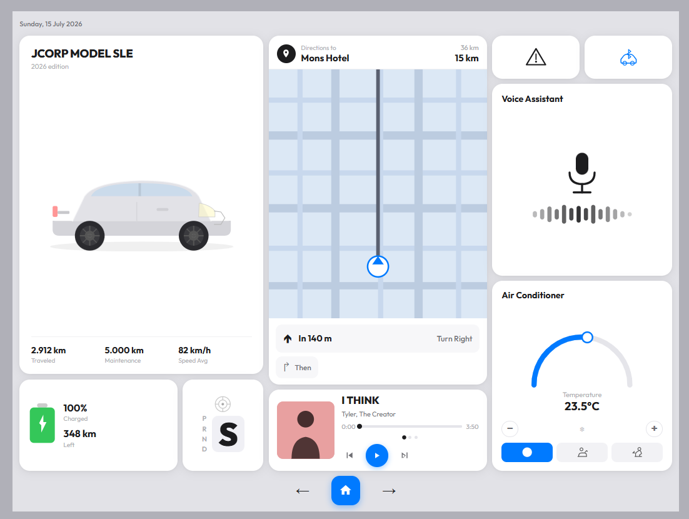
Two-column layout with navigation map, directions to Mons
Hotel, distance cards, and stacked safety control cards on a
light gray background.
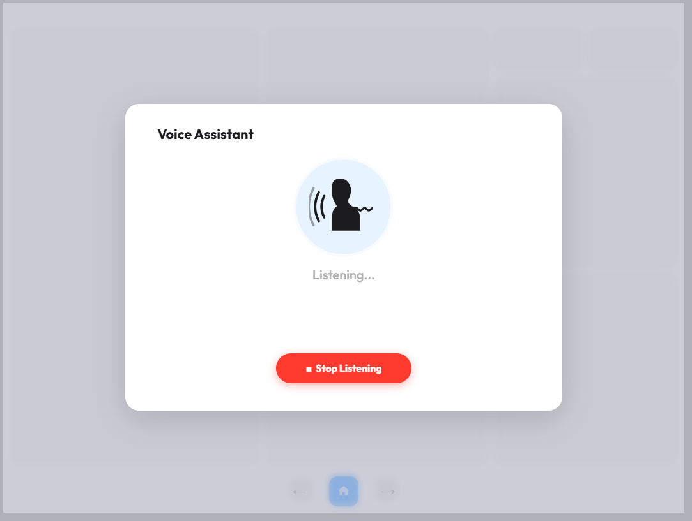
Centered modal titled “Voice Assistant” showing a silhouette,
confirmation “Voice memo recorded!”, and action buttons on a
blurred background.
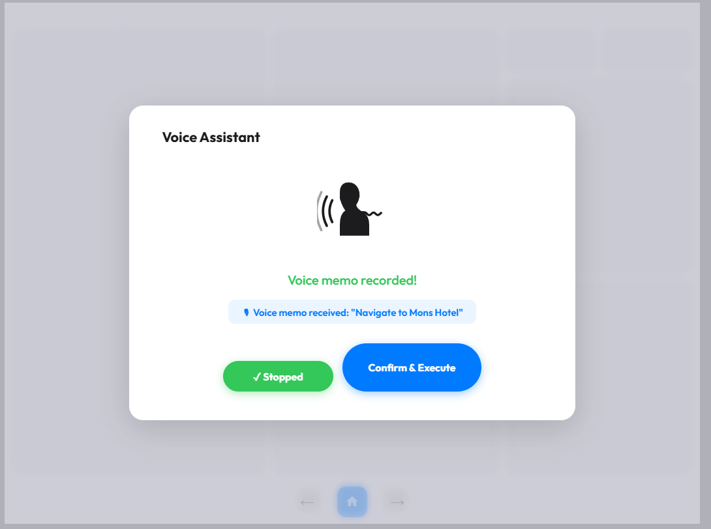
Similar modal with “Listening…” status and a glowing red “Stop
Listening” button on muted blurred background.
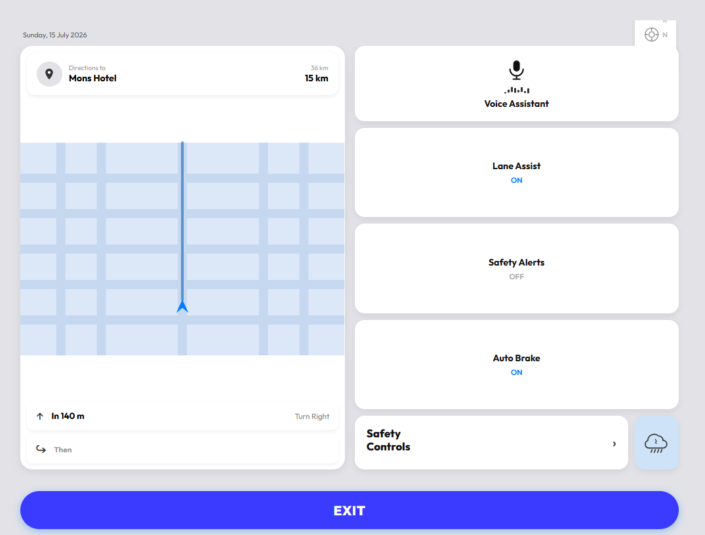
Three-column dashboard showing date, car info and stats, map
and media player, voice assistant and climate controls, with
bottom navigation bar.
A C console application for managing fitness activities and food
intake with daily and weekly calorie reporting. Features include
database management, interactive daily logs, and detailed health
feedback.
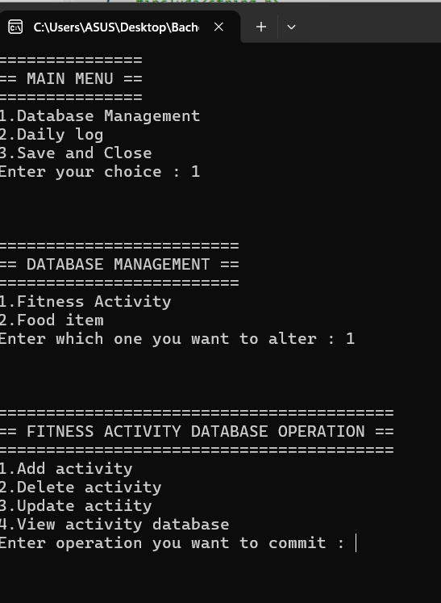
Main menu in terminal showing options for database management,
daily logs, and saving.
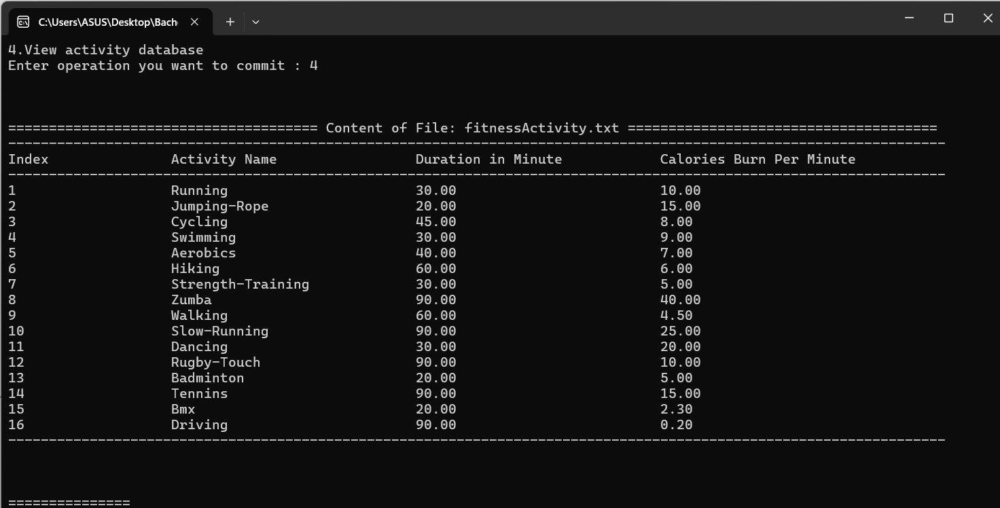
Daily Summary Report and Week Progress Report with calories
burned, consumed, and fitness score.
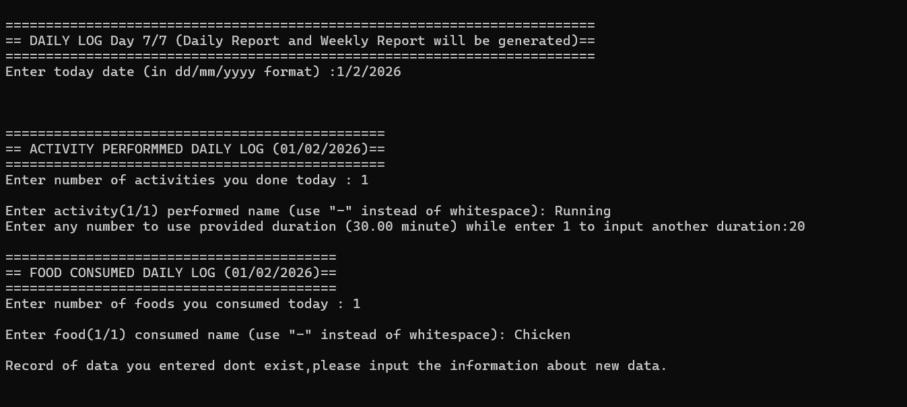
Interactive daily log prompting for date, activities
performed, and foods consumed.
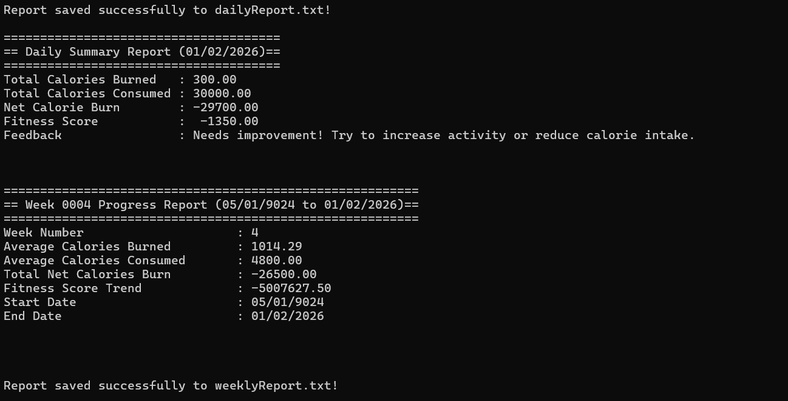
Fitness activity database displayed as a table with activity
names, durations, and calories burned per minute.
An engaging Java Swing mental health awareness quiz app featuring 20
gamified questions, star rewards, badges, a leaderboard, learning
modules, and motivational feedback to empower youth.
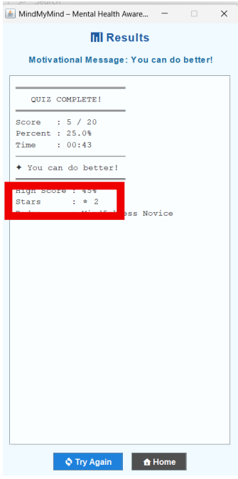
Multiple-choice question interface with countdown timer and
user-friendly controls.
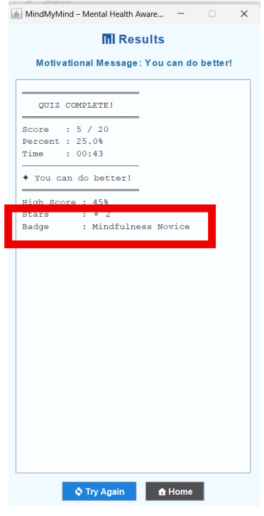
Results screen with a motivating message, final score,
percentage, time, and badges.
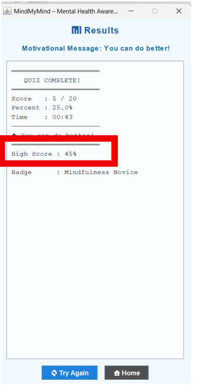
Detailed quiz completion stats emphasizing stars earned and
badge achievements.
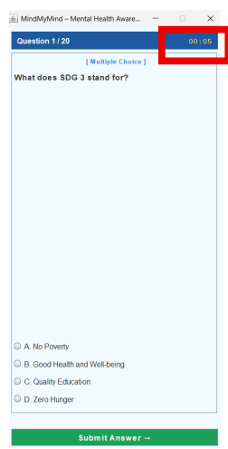
Results screen with retry and home navigation, designed with
light blues and monospaced layout.